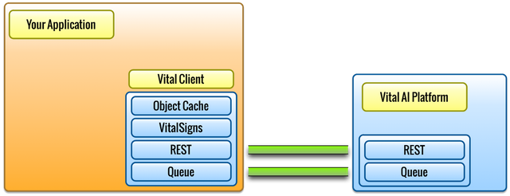

Application Integration

The Vital Client is added to your application, providing an API to
access the Vital Platform. The Vital Client includes a cache of data
objects to improve performance, the REST and Queue interfaces, and the
VitalSigns data mapping component, which aligns your application data
model with the Vital AI Platform. VitalSigns greatly improves
development efficiency, eases integration, and eliminates additional
data mapping and other data maintenance.
The Vital AI platform includes Machine Learning, Natural Language
Processing, Logical Inference, Graph Analytics, Data Analysis via
Hadoop, Web Crawling, integration with Twitter and Facebook, and large
scale semantic data management, available via the Vital Client.